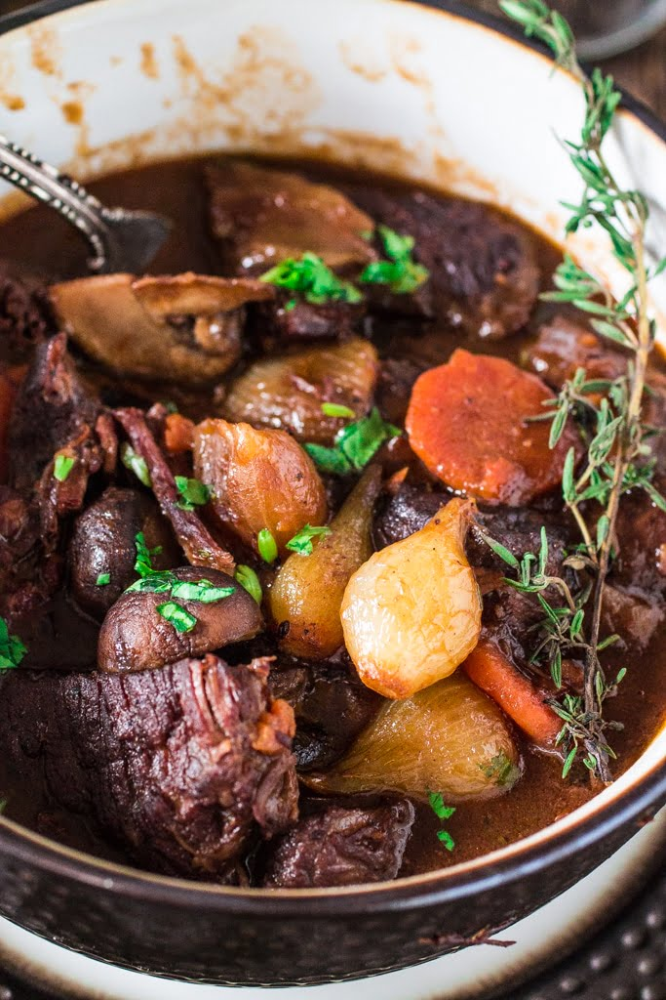

Boeuf Bourguignon

Description
Boeuf Bourguignon is a traditional French classic dish that originated in Eastern France. It is a rich, comforting beef stew made with red wine, mushrooms and pearl onions. A perfect dish for cold weather.
Ingredients
For the Stew
- 6 ounces thick cut bacon, diced
- 1 tablespoon olive oil
- 3 pounds lean stewing beef (preferably chuck), cut into 2 inch cubes
- 1 large onion, peeled and sliced
- 1 large carrot, peeled and sliced
- 2 garlic cloves, minced
- Salt and pepper to taste
- 1 tablespoon flour
- 1 750ml bottle full bodied, young red wine
- 2 to 3 cups brown beef stock
- 1 tablespoon tomato paste
- 1 teaspoon thyme leaves
- 1 bay leaf
- Garnish: chopped parsley
For the pearl onions
- 18 to 24 small white pearl onions
- 1 1/2 tablespoons olive oil
- 1 1/2 tablespoons butter
- ½ cup of beef broth
- Salt and ground pepper to taste
- 1 bay leaf
For the mushrooms
- 1 pound fresh mushrooms, quartered
- 2 tablespoons butter
- 1 tablespoon oil
Steps
- Bring a pot of water to boil and add the bacon. Cook for 10 minutes, drain and dry with paper towels. (This step removes the excess salt/smoky flavor and renders some of the fat.)
- Pre heat oven to 450 degrees.
- In a large dutch oven (or ovenproof casserole), over medium heat, heat the oil and, once hot, sauté the bacon for 2 to 3 minutes or until golden brown. Remove with a slotted spoon and reserve.
- Increase the heat to medium high and, working in batches, brown the beef on all sides in the hot oil and bacon fat. Remove the browned beef and reserve.
- In the same fat, add the onion and sauté until it begins to brown, about 2 minutes. Add the garlic and carrots and continue sautéing for another couple minutes.
- Return the bacon and the beef to the dutch oven and season everything with salt and pepper. Then, sprinkle the flour and toss to coat the meat. Transfer the dutch oven, uncovered, to the pre heated oven and let it cook for 4 minutes.
- After 4 minutes, toss the meat once more and return the pot to the oven for 4 more minutes. (This process browns the flour and covers the meat with a light crust.)
- Remove the dutch oven from the oven and turn the temperature down to 325 degrees.
- Set the dutch oven on the stove again, over medium heat, and stir in the wine and the beef stock, so that the beef is barely covered. Now it's a good time to scrape any remaining browned bits off the bottom of the dutch oven, using a wooden spoon!
- Add the tomato paste, the thyme and the bay leaf. Once it begins simmering, cover and transfer to the oven. Cook for 2 1/2 to 3 hours or until the meat is tender. The meat is done when a fork pierces it easily.
- While the beef is cooking, prepare the onions and mushrooms.
- Peeling pearl onions can be challenging, so here's a little trick: Bring a pot full of water to a boil. While the water is boiling, trim the root end of the onions. Then add the onions and blanch for about a minute. Transfer them to a bowl of ice water to stop the cooking. Pinch each onion at its stem end, and it should just slip out of its skin. If not, use a paring knife to remove the skin.
- In a large skillet, over medium heat, heat the olive oil and the butter until they are bubbling. Add the onions and sauté for about 10 minutes, stirring occasionally, until they are browned. Be careful not to break their skin!
- Pour the beef broth, season to taste and add the bay leaf. Cover and simmer slowly for 40 to 50 minutes or until the onions are soft (but retain their shape) and the liquid has evaporated. Reserve.
- Wipe out skillet and heat remaining oil and butter over medium high heat. Add the mushrooms and toss and shake pan for four to five minutes. As soon as they begin brown lightly, remove from heat.
- When the beef is done, remove from oven and separate the sauce from the beef, bacon and carrots, using tongs Reserve.
- Strain the sauce through a fine-meshed sieve set over a sauce pan. Skim fat off the sauce and simmer for a minute or two, skimming off additional fat as it rises. Cook until the sauce is thick enough to coat the back of a spoon. If too thick, add a few tablespoons of beef broth.
- Transfer the meat and vegetables back to the dutch oven and pour the sauce over it.
- Cover the dutch oven and simmer for 2 to 3 minutes, basting the meat and vegetables with the sauce several times.
- Taste for seasoning and fix salt and pepper.
- Taste for seasoning and fix salt and pepper.